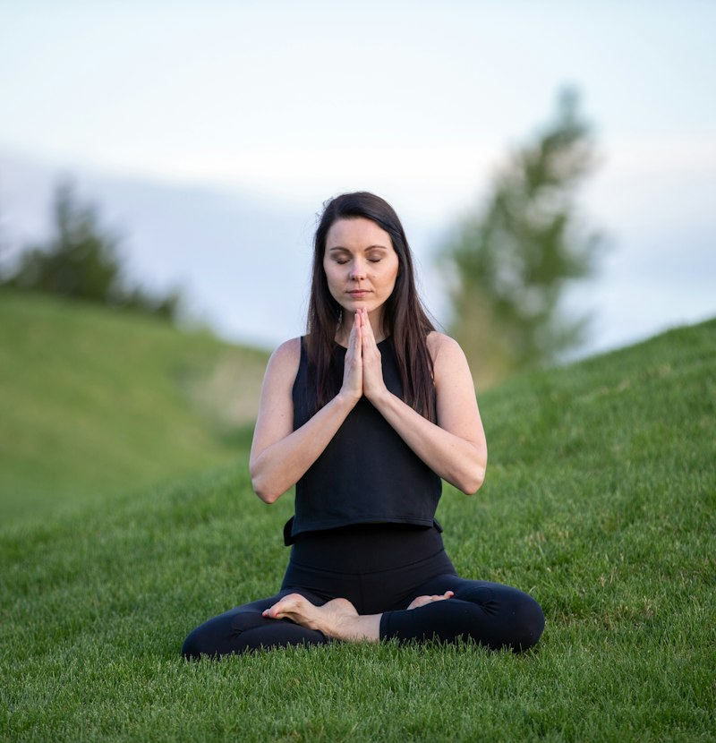
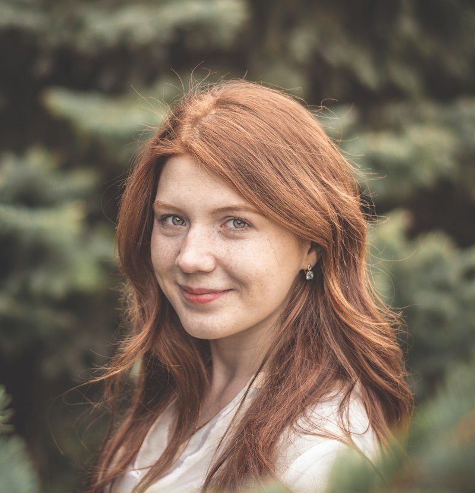
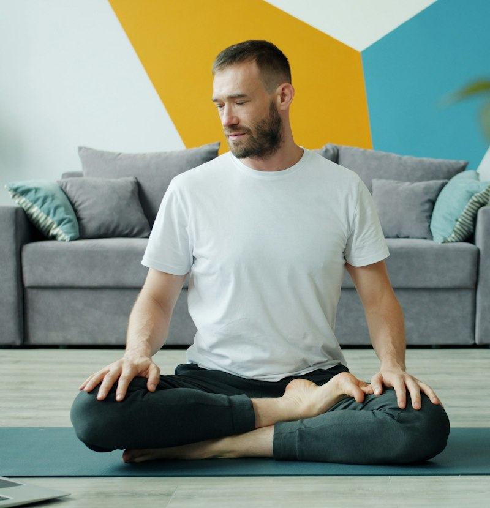
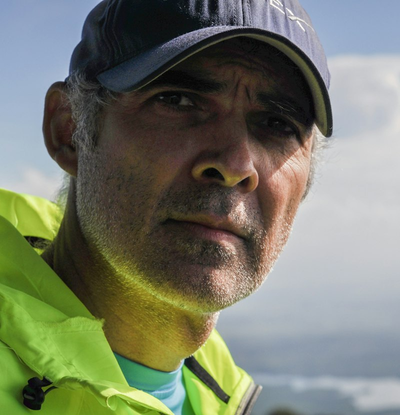
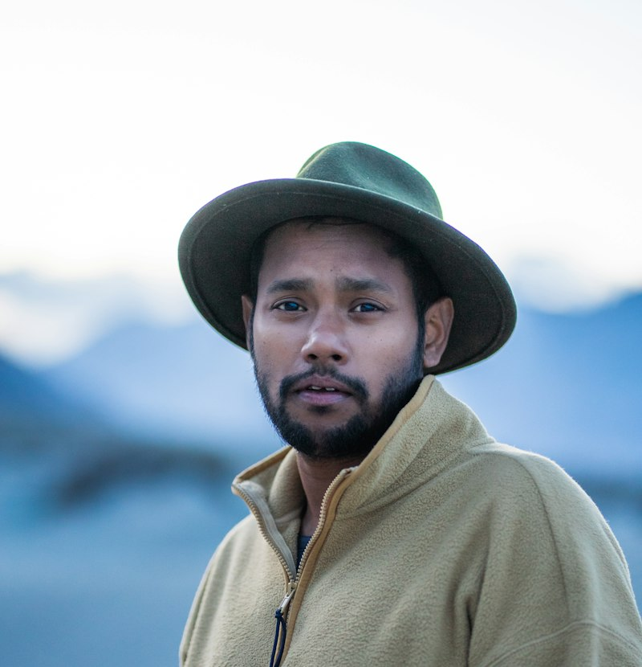

Coaches
Our coaches
Our fully remote team lives, travels, and works all over the world.
From India to Indonesia, Mexico to Morocco, Romania to
the US; and everywhere else in between.
From India to Indonesia, Mexico to Morocco, Romania to
the US; and everywhere else in between.

Giulia Ferrante
Yoga Teacher
Europe
Giulia Ferrante
Yoga Teacher
I use yoga as an everyday tool for better mobility, balance and body awareness. My classes focus on breath, alignment and quiet strength, never on pressure or competition. I help people build a steady practice that fits their real life and supports them for years.
My style is grounded, clear and open to every level.
My style is grounded, clear and open to every level.
Countries travelled:
14
Retreats attended:
18
Samira El Idrissi
Wellbeing & Balance Coach
Africa
Samira El Idrissi
Wellbeing & Balance Coach
I believe lasting health comes from small changes you can actually keep — and that is what I help my clients find. I focus on whole-food eating, simple meal prep, sensible strength and cardio training and, above all, consistency.
Anyone can reach their goals with the right plan and a little support.
Anyone can reach their goals with the right plan and a little support.
Countries travelled:
14
Retreats attended:
12

Radu Ionescu
Transformational Retreat Guide
Europe
Radu Ionescu
Transformational Retreat Guide
I lead retreats about clarity, reflection and intentional change. My work blends structured sessions, nature practices and group work. I help people slow down, look again at their priorities and reconnect with their own direction.
I value presence, honesty and calm observation as the base of real change.
I value presence, honesty and calm observation as the base of real change.
Countries travelled:
22
Retreats attended:
123

Lena Vogel
Holistic Wellness Coach
Asia
Lena Vogel
Holistic Wellness Coach
I work with people who want to feel better as a whole — mentally, emotionally and physically. My approach is supportive and holistic, and I always choose balance over extremes.
Together we build routines that bring stability, energy and self-awareness into daily life.
Together we build routines that bring stability, energy and self-awareness into daily life.
Countries travelled:
28
Retreats attended:
45

Marco Bellini
Meditation Teacher
Europe
Marco Bellini
Meditation Teacher
I teach meditation as a practical skill for focus, emotional balance and a clearer mind. Sessions are simple and structured, good for beginners and for people with years of practice.
I share techniques you can bring into your morning, your commute and your work, not only into a quiet room.
I share techniques you can bring into your morning, your commute and your work, not only into a quiet room.
Countries travelled:
16
Retreats attended:
21

Hassan Ait Lahcen
Nature Retreat Guide
Africa
Hassan Ait Lahcen
Nature Retreat Guide
I design and lead retreats built around nature, walking and silence. Long walks, simple camps and time outdoors help people reconnect with their senses and their own pace.
I believe the landscape does half the work — my job is to open the door and keep everyone safe.
I believe the landscape does half the work — my job is to open the door and keep everyone safe.
Countries travelled:
11
Retreats attended:
64

Inês Carvalho
Conscious Movement Instructor
Europe
Inês Carvalho
Conscious Movement Instructor
I teach movement that is playful, free and kind to the body. My classes mix dance, mobility and somatic practice, so people can release tension and enjoy moving again.
There is no right way to look — only a better way to feel at home in your body.
There is no right way to look — only a better way to feel at home in your body.
Countries travelled:
19
Retreats attended:
37

Youssef Amrani
Silent Retreat Guide
Africa
Youssef Amrani
Silent Retreat Guide
I guide silent retreats for people who need to step out of the noise for a while. Through sitting practice, mindful walking and simple work, we learn to listen again.
Silence can feel strange at first, so I make sure the structure is clear and the support is always there.
Silence can feel strange at first, so I make sure the structure is clear and the support is always there.
Countries travelled:
24
Retreats attended:
58

Ioana Marin
Stress-Relief Guide
Europe
Ioana Marin
Stress-Relief Guide
I help people lower stress through breathwork, gentle movement and nervous system care. My sessions aim to restore balance, steady the emotions and release tension held in the body. I work with people who have carried stress for years and want tools they can repeat every day. My approach is calm, patient and focused on recovery that lasts.
Countries travelled:
14
Retreats attended:
18

Ana Sousa
Nutrition Specialist
Europe
Ana Sousa
Nutrition Specialist
I support retreat guests with food that is simple, nourishing and adapted to real needs. I focus on whole foods, steady energy and practical habits that help focus and recovery. I show people how food affects body and mind, without strict rules or unnecessary limits, and always with respect for how they live.
Countries travelled:
17
Retreats attended:
89

Kadek Ayu
Yoga Teacher
Asia
Kadek Ayu
Yoga Teacher
I teach a calm and joyful style of Hatha yoga rooted in the traditions of my island. My classes connect breath, movement and gratitude, and I love welcoming people who have never tried yoga before.
For me, practice should leave you lighter, kinder and a little more curious.
For me, practice should leave you lighter, kinder and a little more curious.
Countries travelled:
9
Retreats attended:
33

Daniel Okafor
Meditation Coach
USA
Daniel Okafor
Meditation Coach
I use meditation as a practical tool for emotional stability, focus and self-discipline. My approach is structured and easy to follow, helping people build a habit that fits into real life.
I help participants grow awareness and resilience with techniques they can use during a retreat and long after it.
I help participants grow awareness and resilience with techniques they can use during a retreat and long after it.
Countries travelled:
19
Retreats attended:
56
Our values
As a team we want to be one small link in a chain of
wellbeing around the world. To live up to that,
we try to embody these values
wellbeing around the world. To live up to that,
we try to embody these values
01
Honesty
Having the courage to be
open about how we feel
and what we do
open about how we feel
and what we do
02
Self-responsibility
Owning our choices and
our path, and leaving
the blame game behind
our path, and leaving
the blame game behind
03
Kindness
Showing care, empathy
and patience so every
guest feels at ease
and patience so every
guest feels at ease
04
Dedication
Meeting the challenge of
the journey and staying
true to our vision
the journey and staying
true to our vision
05
Service
Offering our skills and
gifts to bring more
care and calm into the
world
gifts to bring more
care and calm into the
world
06
Beauty
Celebrating the unique
light that lives in each
one of us
light that lives in each
one of us
07
Human Wellbeing
In the end, everything
we do is about people
we do is about people
08
Travel & track progress
Use the Solace Journal to
reflect and rebook.
reflect and rebook.